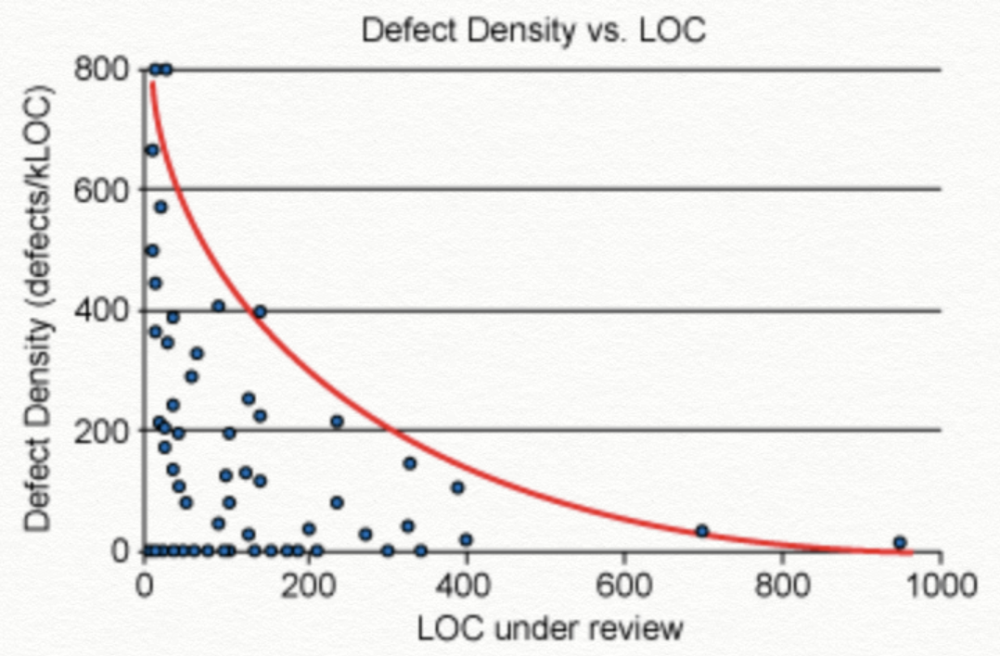
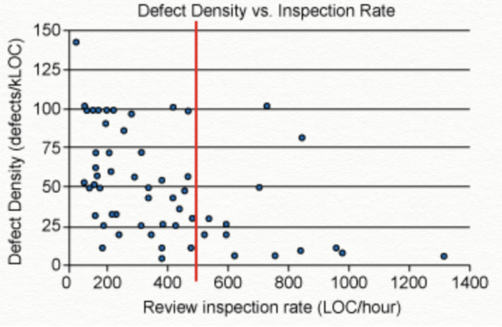

What is Bast Code Review#
Create: 2021년 8월 16일 오전 2:32
Tag: git, review
무엇을 리뷰해야 하는가?#
- 성능 개선 개발 : 시간복잡도
- 신규 feature 개발 : 잠재적인 오류에 대한 검출
- 리팩토링 : 테스트 코드나 구조에 대한 물음
- 신규 기술 도입 : 해당 기술의 로직과 그에 대한 물음
- 기타 : 변수명과 같은 코드 컨벤션을 하기도 한다. 전체적인 흐름을 이해하기 위해 실제 빌드를 해서 동작을 시켜보고 이해하기도 합니다.
풀리퀘 3원칙#
1. 300의 법칙#
-
Cisco 시스템 프로그래밍 팀의 연구에 따르면 200~400(LoC) 정도의 코드를 60~90분동안 리뷰하면 70~90%의 결함을 발견할 수 있다고 합니다.
-
리뷰를 하면서 시간당 500(LoC) 이상을 리뷰하면 결함을 찾을 확률이 현저히 떨어집니다.


한번에 200~400 LoC를 리뷰해야 효과가 좋다
https://smartbear.com/learn/code-review/best-practices-for-peer-code-review/

시간당 500 LoC 이하로 리뷰를 진행해라.(즉,천천히 해라)
https://smartbear.com/learn/code-review/best-practices-for-peer-code-review/
Tip
풀리퀘는 300(LoC) 내외를 올리자.
시간당 500(LoC) 미만으로 보자.
2. 무지전능(無知全能)의 법칙#
-161bdcdd1e526d6b2e9f11bee68e89d0.jpg)
PR에 내용은 마법서가 아니다. 또한 리뷰어가 모든것을 알고 보는 것도 아니다.
- 친절한 PR은 기본이다. 논의가 지지부진한 것 같다면, PR에 설명이 부족한 것이다. 추가적인 설명을 달아서 효과적으로 리뷰할 있도록 하자. 코드를 제대로 이해할 수 절대 적절한 리뷰가 될 수 없다.
- 리뷰가 리뷰어가 코드의 문맥을 빨리 파악할 수 있도록 충분한 정보를 제공하는 것이 중요하다.
- 무슨 이유로 어떻게 코드를 변경했는지, 어떤 위험이나 우려가 발견되었는지에 대한 충분한 정보를 리뷰어에게 제공해야 한다.
- 이런 작업을 할때 GitHub에서 제공하는 이슈와 PR 템플릿을 사용하면 도움이 될것이다.
- 스크린 샷, 시퀀스 다이어그램등의 시각적 자료를 적극 활용하자.
3. 현자의법칙#
- 코드를 평가하는 자리도 아니다. 연차가 많다고 내 의견을 관철 시키려 하지말자.
- 코드리뷰는 코드를 검사 받는 자리가 아니다. 수평적 입장에서 접근하고 적극적인 리뷰가 필요하다.

- Apply는 '책임짐' 이란 뜻으로 사용하는것이 아니다.
- 신뢰와 존중을 기본으로 장착 하자.
- 리뷰어에게 감사하다는 말을 잊지 말자
리뷰는 업무다.#
가능한 많은 부분을 자동화 하자#
- 정적분석
- 코딩 스타일 확인
- 코딩 컨벤션
- 확인을 위한 실행파일 배포
- 리뷰 노티
Labels 를 적극 활용해라#
- 코드에 모든 내용을 리뷰해야 하는것은 아니다.
- Labels 기능을 이용해서 변수명 변경, autoformating, class 위치 변경같은 비지니스 로직이 아닌것들은 바로 머지 할수 있도록 PR을 날리는 요령이 필요하다.
유익하다고 느꼈던 리뷰들#
- 미리 발견하는 버그
- 기존 코드의 히스토리
- 삽질 회피 코드의 공유
- 더 나은 로직의 제안
- 더 나은 변수명 제안
업무시간에 하지 말하야 할일?(조금은 불필요한 논쟁이라고 생각했던 리뷰들)#
- 취향의 차이 (if vs switch)
- 바꾸기도 뭐하고 안 바꾸기도 뭐한 애매한 수준의 변수명 제안
- 아주 미묘한 성능 개선 제안
- 너무 먼 미래에 대한 방어 코드
참고자료#
- https://tosslab.github.io/codereview/2015/12/18/%EC%BD%94%EB%93%9C%EB%A6%AC%EB%B7%B0-%EC%9D%B4%EB%A0%87%EA%B2%8C-%ED%95%98%EA%B3%A0-%EC%9E%88%EB%8B%A4.html
- https://engineering.linecorp.com/ko/blog/effective-codereview/
- https://tech.kakao.com/2016/02/04/code-review/
- https://velog.io/@zetlos/%EC%86%8C%EC%8A%A4%EC%BD%94%EB%93%9C-%EB%A6%AC%EB%B7%B0%EC%97%90-%EB%8C%80%ED%95%9C-%EC%A7%A7%EC%9D%80-%EC%9D%B4%EC%95%BC%EA%B8%B0